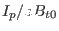
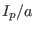
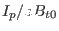
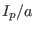
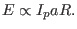
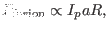

Next: Density limit Up: The constraint of force-balance Previous: Beta limit
As mentioned in Sec. 2.8, the beta limit study on JET tokamak
shows that the maximal  obtained is proportional to
. This means the maximal plasmas pressure obtained is proportional to , i.e.,
obtained is proportional to
. This means the maximal plasmas pressure obtained is proportional to , i.e.,
|  | (94) |
|  | (95) |
yj 2018-03-09